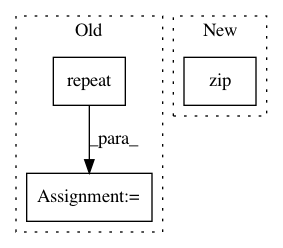

11e9c7adfbf7d50dd9ef4442cf7806cdb2ee2368,samples/core/get_started/custom_estimator.py,,main,#Any#,105
Before Change
})
// Train the Model.
train = (
make_dataset(train_x, train_y)
.repeat()
.shuffle(1000)
.batch(args.batch_size))
classifier.train(input_fn=from_dataset(train), steps=args.train_steps)
// Evaluate the model.
test = make_dataset(test_x, test_y).batch(args.batch_size)
After Change
predictions = classifier.predict(
input_fn=lambda:eval_input_fn(predict_x, batch_size=args.batch_size))
for pred_dict, expec in zip(predictions, expected):
template = ("\nPrediction is "{}" ({:.1f}%), expected "{}"")
class_id = pred_dict["class_ids"][0]
In pattern: SUPERPATTERN
Frequency: 3
Non-data size: 3
Instances
Project Name: tensorflow/models
Commit Name: 11e9c7adfbf7d50dd9ef4442cf7806cdb2ee2368
Time: 2017-11-17
Author: markdaoust@google.com
File Name: samples/core/get_started/custom_estimator.py
Class Name:
Method Name: main
Project Name: PIQuIL/QuCumber
Commit Name: 4baeb0ad431e9b626780ac4a31bf4374ad532253
Time: 2018-08-16
Author: emerali@users.noreply.github.com
File Name: qucumber/nn_states/wavefunction.py
Class Name: Wavefunction
Method Name: _shuffle_data
Project Name: tensorflow/models
Commit Name: 11e9c7adfbf7d50dd9ef4442cf7806cdb2ee2368
Time: 2017-11-17
Author: markdaoust@google.com
File Name: samples/core/get_started/premade_estimator.py
Class Name:
Method Name: main